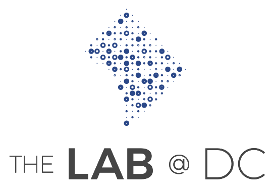

Stronger evidence for a stronger DC
The Lab @ DC is a team in Mayor Muriel Bowser's administration. We are based in the Office of the City Administrator’s Office of Budget and Performance Management and work with a wide range of agencies. The Lab uses scientific insights and methods to test and improve policies and provide timely, relevant, and high-quality analysis to inform the District's most important decisions. DC residents deserve a government that asks questions, tests policies, and iteratively improves how it serves the community.

Get Involved
Connect
Whether you're a District resident, District employee, researcher, or simply excited about evidence-based governance, we want to know you!
Sign UpEvents
From The Lunch @ DC to special events, we're always looking to spread ideas. Join us for The Lunch @ DC, our twice monthly, guest speaker series with leaders in their field. It’s a time to learn, discuss, and socialize!
UpcomingThe Podcast @ DC
Join us as we bring researchers and practitioners together to discuss the most pressing questions for our city. Subscribe wherever you listen to podcasts.
ListenThe Lab is supported by a generous $3.2 million grant from the Laura and John Arnold Foundation. We work with a wide range of agencies, universities, industry, non-profits, and other community groups. Our team comes from diverse professional backgrounds – public sector, private sector, military, and academia – and areas of expertise – public policy, psychology, economics, political science, data science, public health and law to name a few. Our common bond is our passion for public service and evidence. Collectively, we have decades of applied experience tackling important policy questions at the local, state, and federal level, and plan to earn decades more experience in DC.
Translate research
into actionable policy
What We Do
The Lab @ DC collaborates with District agencies to:
Design policy and program interventions that are tailored to the District, based on theory and evidence from academic and industrial research, as well as analyses of available administrative data.
Conduct high-quality evaluations—including randomized evaluations and rapid, iterative experimentation—to learn how well things work and how to improve.
Foster a scientific community of practice, engaging and collaborating with experts and stakeholders across agencies, universities, and community groups.
Our Projects
We're working on a variety of projects, from body cameras to improve policing, to flexible rent programs to address homelessness, to a Form-a-Palooza to systematically improve all government forms. To learn more about these and other projects, visit our project pages on the Open Science Framework.
ProjectsTeam
Donald Braman
Senior Social Scientist
Peter Casey
Senior Data Scientist
Andy DeSoto
Fellow
Katie Gan
Senior Social Scientist
Julia Greenberg
Research Assistant
Chrysanthi Hatzimasoura
Senior Social Scientist
Rebecca Johnson
Data Scientist
Tim Madden
Podcast Intern
Nat Mammo
Data Scientist
Vicky Mei
Data Scientist
Karissa Minnich
Senior Operations Analyst
Namita Mody
Operations Analyst
Ryan Moore
Senior Social Scientist
Nellie Moore
Operations Analyst
Sam Quinney
Interim Director
Anita Ravishankar
Fellow
Barbara Toizer
Research Assistant
David Yokum
Senior Advisor